CAPSTONE PROJECT • BANGKIT ACADEMY 2024 (TEAM C242-PS316)
Catascan — Cataract Detection Application
An innovative Android application powered by Machine Learning and Google Cloud Platform
to detect and classify cataract stages (normal, immature, and mature)
from eye images for accessible early screening.
My Role
Cloud Computing & Backend Developer
Timeline
Nov – Dec 2024
Cloud Region
asia-southeast2 (Jakarta)
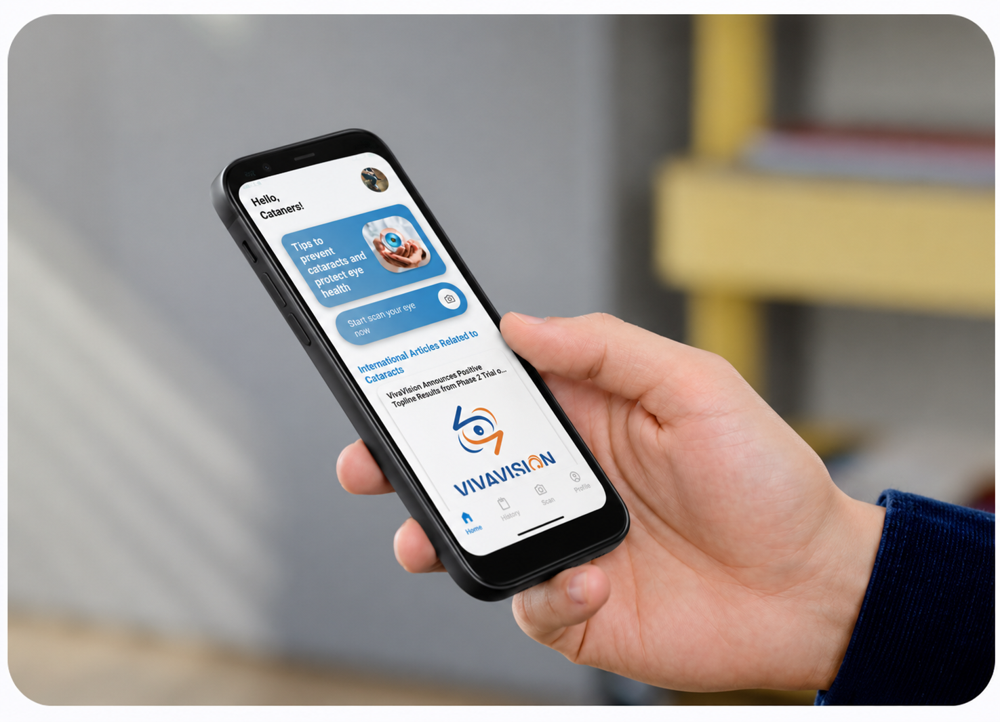
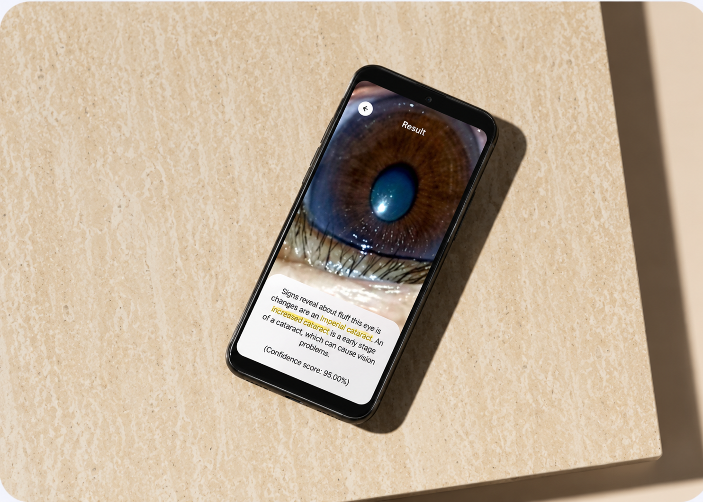
01 // PROJECT OVERVIEW
Catascan: Cataract Detection Using Images Taken
Catascan is an innovative Android application designed to detect and classify
the stages of cataracts—specifically normal, immature, and
mature—using machine learning technology. This project empowers vulnerable and
underserved communities by providing a cost-effective, portable, and accessible tool for early
cataract detection, promoting timely medical intervention and reducing preventable vision loss.
Background
According to the World Health Organization (WHO), cataracts are the leading cause of blindness
worldwide, accounting for 51% of global blindness cases. Traditional clinical
screening requires specialized optical equipment and trained ophthalmologists, making early
diagnosis difficult in low-resource or remote areas.
Motivation
Inspired by the global impact of preventable vision loss, our team combined ubiquitous
smartphone camera technology with Machine Learning and scalable Google Cloud services to
bridge the healthcare accessibility gap through instant preliminary eye screening.
Key Application Features
01
Eye Cataract Scan
Capture a close-up eye photo directly using CameraX or upload from the gallery to classify cataract stages with confidence scores.
02
Cataract Articles & Prevention
Curated medical articles explaining cataract types (such as Nuclear Sclerosis), symptoms, and daily eye-care prevention tips.
03
Cloud-Synced Scan History
Automatically saves every examination image, classification result, and timestamp to Google Cloud SQL & Cloud Storage.
04
Profile & App Preferences
Supports JWT-authenticated accounts, profile picture uploads, Dark Mode / Light Mode switching, language selection, and notifications.
As the Cloud Computing & Backend lead in the capstone team, I designed the cloud architecture
deployed in asia-southeast2 and built the Node.js & Express.js RESTful API
connecting the Android client, machine learning artifacts, and relational database.
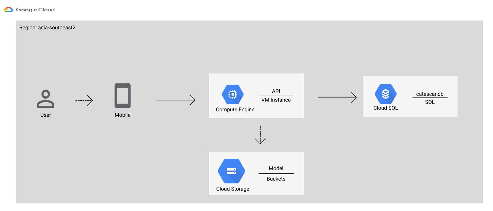
Arsitektur Google Cloud Platform (Region: asia-southeast2) — Compute Engine, Cloud SQL (catascandb), Cloud Storage, dan Cloud Monitoring Uptime Check.
Compute Engine & Cloud Run: Hosted the Express.js RESTful API on Debian Linux VM managed with PM2 process manager and configured VPC / Private IP connectivity for low-latency database access.
Cloud SQL (catascandb): Managed relational MySQL database using Sequelize Migrations with two core entities: Users and ScanHistories.
Cloud Storage & Cloud Monitoring: Configured storage buckets for user profile images, eye scan photos, and ML models, paired with HTTP Uptime Checks and email downtime alerts.
RESTful API Endpoints
Method
Endpoint
Function
GET
/
Health check to verify that the API service is running
POST
/api/register
Register a new user account with bcrypt password hashing
POST
/api/login
Authenticate user credentials and issue a signed JWT token
GET
/api/getuser
Retrieve authenticated user profile data via Bearer token
POST
/api/history
Upload eye scan image to Cloud Storage and save scan history
GET
/api/history
Retrieve chronological cataract scan history for the user
POST
/api/uploadprofile
Upload and update user profile picture in Cloud Storage
Antarmuka pengguna aplikasi Android Catascan mulai dari onboarding, autentikasi,
artikel edukasi katarak, pemindaian mata, hasil klasifikasi, hingga riwayat dan pengaturan profil.
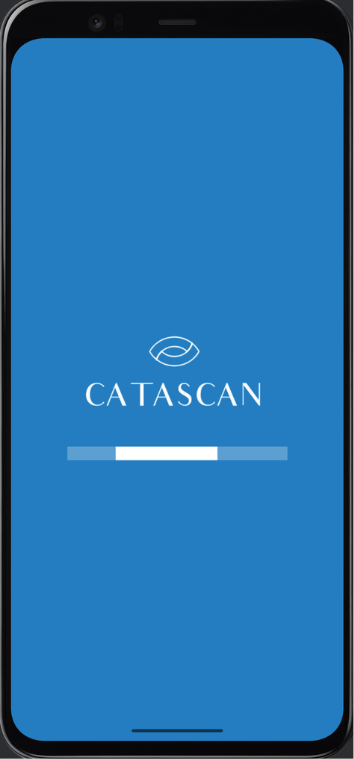
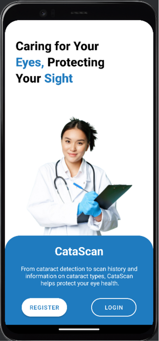
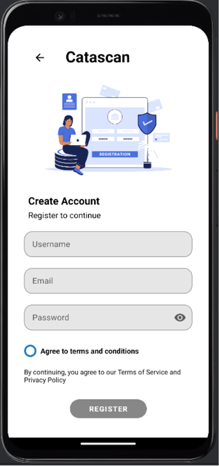
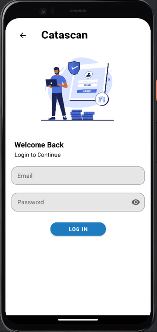
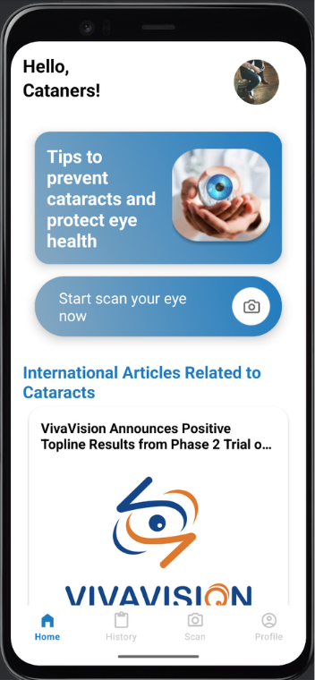
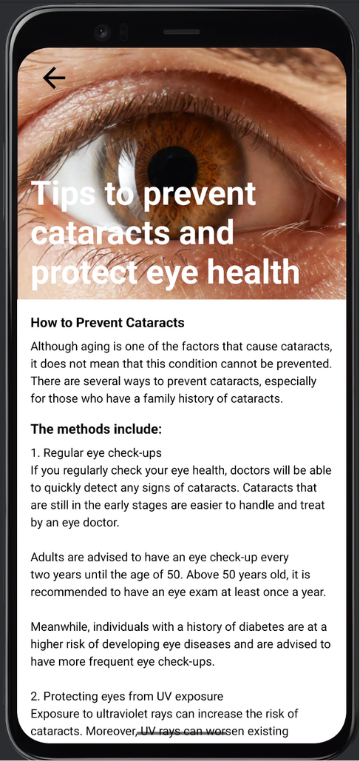
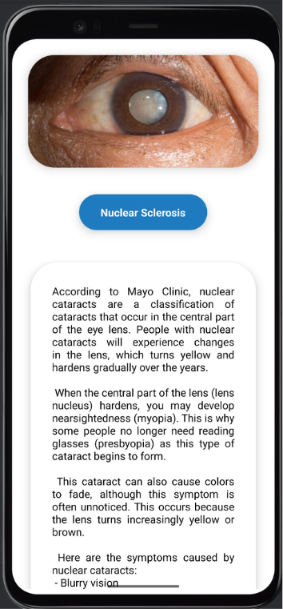
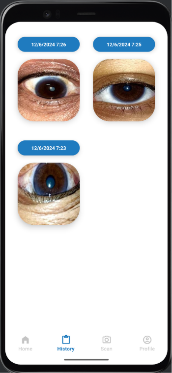
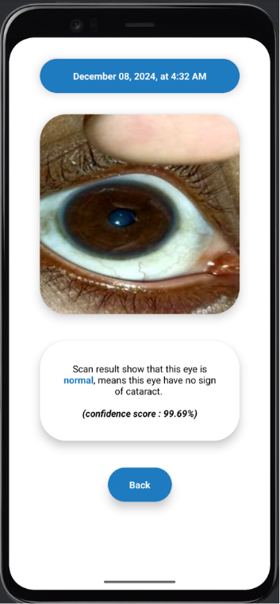
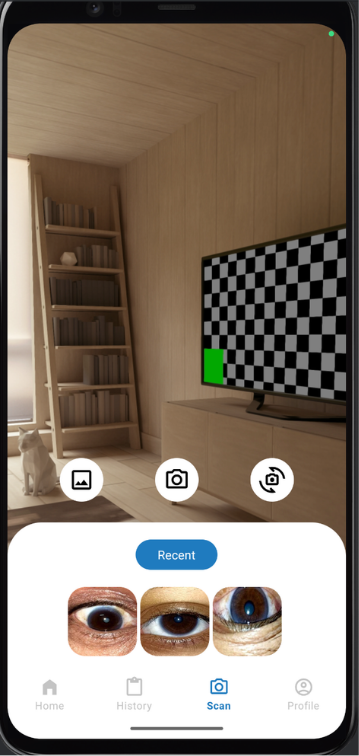
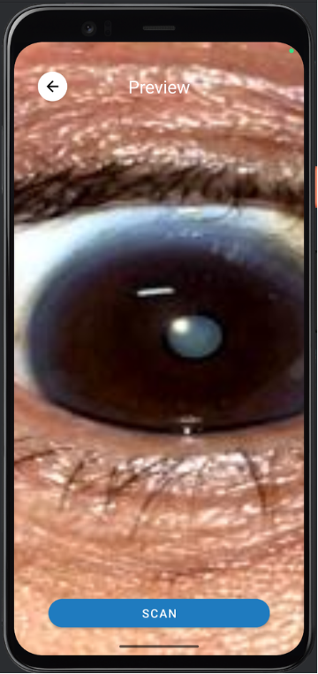
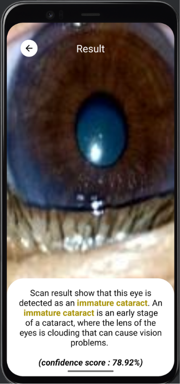
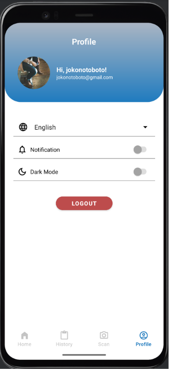
04 // CAPSTONE PITCH DECK
Team Presentation
Video presentasi Capstone Project Catascan oleh Tim C242-PS316 pada program Bangkit Academy 2024.
Developed and maintained backend RESTful APIs using Laravel 12 at CV FlyHigh Sinergi Indonesia
to support welder certification services, job posting management, and authentication.